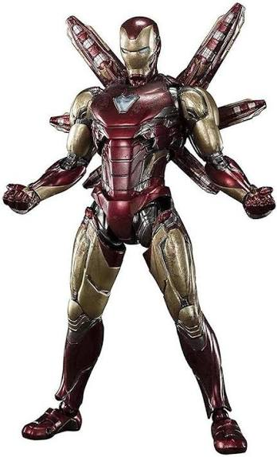
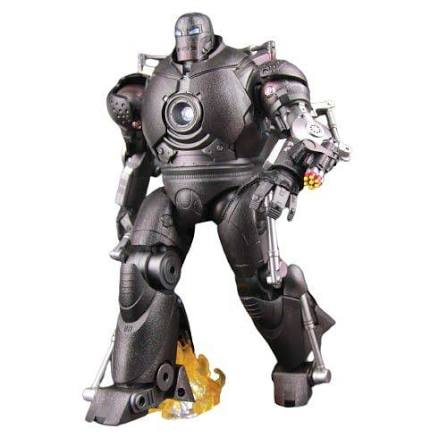

Mark 10
Armadura de combate pesado, projetada para artilharia. Equipado com ombreiras com mini-mísseis e repulsores de impacto amplificado.
Armadura de combate pesado, projetada para artilharia. Equipado com ombreiras com mini-mísseis e repulsores de impacto amplificado.

Protótipo de infiltração com camuflagem ótica. Revestimento que absorve radar e torna a armadura praticamente invisível para missões furtivas.

A primeira armadura icônica vermelha e dourada. Liga de titânio-ouro, voo supersônico e o primeiro reator arc estável no peito.

Construída em uma caverna no Afeganistão. Sucata, chamas e vingança. Foi onde tudo começou, a armadura que fez Tony Stark se tornar o Homem de Ferro.